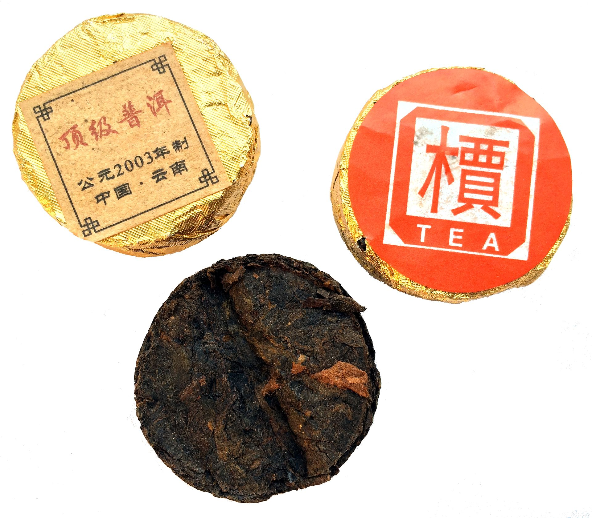

茶叶专题
很多第一次接触普洱茶的人，都是从一个过于粗糙的印象开始的：它颜色深、味道厚、适合放很多年，所以它大概就是一种“陈年茶”。这个理解不能说完全错，但离真正的普洱还很远。普洱之所以重要，不只是因为它能陈化，而是因为它把中国茶里许多原本分散的话题——原料、山场、工艺、紧压、仓储、年份、饮用经验和市场判断——全都缠在了一起。
一旦开始认真喝普洱，讨论就很难只停留在“香不香、好不好喝”。你会不断遇到别的维度：这是不是云南大叶种？是生茶还是熟茶？原料偏布朗、易武、临沧还是普洱产区？压得紧不紧？仓储干不干净？这茶现在适合喝，还是更适合再放几年？也正因为这些问题同时存在，普洱不只是一类茶，更像一个会随着时间继续展开的系统。
对一个想认真介绍中国茶的网站来说，普洱不能只用一页薄稿匆匆带过。它必须被讲成一个完整世界：既要讲云南为什么重要，也要讲生熟之间为什么完全不是一回事；既要讲工艺和风味，也要讲仓储与争议为什么会塑造读者对普洱的判断。

离开云南，普洱就会失去最核心的重力。普洱的基础，是云南大叶种茶树资源、山地生态和区域性的制茶传统。相比很多以精细嫩采见长的绿茶，普洱背后的原料逻辑更强调大叶种、山地环境、树龄差异和后续转化潜力。也就是说，普洱的价值不是只在制成那一刻被决定，原料本身就已经预留了未来变化的空间。
这也是为什么许多真正喝普洱的人，最后都会开始谈山头。布朗、易武、勐海、临沧、景迈、冰岛、昔归，这些地名并不是市场装饰词，而是饮茶经验里非常具体的感官线索。不同区域的大叶种原料，会在苦涩强度、香气走向、汤感厚薄、回甘速度、喉韵和后段留香上表现出明显差异。对初学者来说，先把“普洱是一整个云南茶世界”这个认识立住，比死记一堆年份更重要。
几乎所有普洱入门，第一步都要把生普和熟普分清。很多人一开始把“普洱味”理解成一种统一的深、旧、土，其实正是因为没有先把这道门打开。
生普更接近普洱原料与时间关系的原始表达。新制生茶常常颜色偏黄绿到金黄，香气可能带花香、蜜香、清苦感、山野气和鲜锐张力，入口的苦涩更明显，但回甘生津也往往更直接。随着年份增加和仓储变化，它会逐渐从青劲、张扬走向更圆融、更深沉的阶段。
熟普则是在现代工艺条件下，通过渥堆等人工后发酵处理，把茶更快推向一种深褐茶汤、糯感、木质调、陈香、枣香或药香的方向。好的熟普不是“越黑越好”，也不是“越像土味越正宗”，而是要看堆味是否退净、汤感是否厚而不浊、甜润感是否稳定、尾段是否干净。
如果把生普和熟普混成一个模糊概念，就很容易误判：有人因为喝到粗糙熟茶，就误以为普洱都闷、都重；也有人因为接触到过于年轻尖锐的生茶，就认定普洱只是苦涩。实际上，这两类茶虽然共享普洱框架，但喝法、期待、适饮阶段和审美都可以完全不同。
理解普洱的工艺，不能只盯着“它是发酵茶还是不发酵茶”这种简单分类。普洱更关键的一步，是从云南大叶种鲜叶制成晒青毛茶，再根据不同方向进入生茶压制、熟茶渥堆或后续存放流通。晒青毛茶保留了后续变化空间，这一点决定了普洱不像很多绿茶那样追求“尽量把当下状态锁住”。
紧压也是普洱文化里特别重要的一环。茶饼、茶砖、沱茶和小饼、小沱并非只是包装习惯，它们和运输、交易、仓储、陈化、冲泡全都有关系。压得更紧的茶，前几泡舒展会慢一些，后段释放也可能更长；压得较松的茶更容易在短时间内打开，但存放与撬取体验又不一样。对普洱来说，形态从来不是表面问题。
也正因为工艺重心落在“后续能如何变化”，普洱和很多强调新鲜定型的茶形成了鲜明对照。你喝的不是一个一次完成的工艺结果，而是一个仍在继续书写的作品。
普洱的风味判断，最好拆开来看，而不是只问一句“香不香”。对生普来说，干茶条索是否清楚、颜色是否自然、压制是否匀整，是第一层观察；入汤后则要看汤色明亮度、香气的扬与沉、苦涩出现的位置、化开的速度，以及回甘和生津是不是干净。优质生普往往并不怕有苦，但怕苦涩死板、化不开、尾段发干。
熟普则更看重汤体是否厚、是否滑、是否干净。很多初学者会用“浓”去夸熟普，但真正好的熟普不只是浓，而是稠而不闷、甜而不腻、陈而不脏。糯感、木香、枣香、药香都可能出现，但这些词必须建立在洁净度之上。如果一杯熟普从头到尾都像潮湿纸箱或闷仓味，那往往不是“老”，而是仓储或工艺上出了问题。
喝普洱还要特别重视中后段。有些茶开头很抢眼，三泡以后迅速塌掉；有些茶前段并不张扬，但到了第五、第六泡开始显出厚度、层次和稳定度。普洱之所以适合被认真坐下来喝，就是因为它常常把关键判断放在展开过程里，而不是只给你第一口惊艳。
如果说生熟分野决定了普洱的入口，那么仓储与陈化决定的就是它为什么会让人着迷。普洱最特别的一点，是它允许人把“时间”直接作为饮用经验的一部分来讨论。茶不是做完就定型，而是在仓储环境中继续变化。温湿度、空气流动、压制松紧、包装方式、地域气候，都会影响它往后会走向哪里。
也正因为变化不是完全线性的，普洱文化天然带争论。有人偏爱干仓路径，认为香气更清、更利落，转化更慢但更干净；也有人接受更湿润环境下更快形成的深色、沉香与老韵。问题并不只是“哪种更高级”，而是不同饮者对“什么叫好转化”本来就有不同答案。普洱市场里很多争执，其实都围绕这一点展开。
对普通读者来说，最实用的认识是：不要把“年份老”自动等于“更好”。年份只是条件之一。仓储干净不干净、原料基础够不够、当下适饮性如何，往往比年份数字更直接。一个仓储得体、状态开阔的中期茶，可能比一款存坏了的老茶更值得喝。
普洱通常适合用盖碗或小壶，以接近沸水的高温冲泡。对于紧压茶，很多人会先快速润茶一遍，让叶片预热并开始舒展。前几泡往往要短出，因为茶还没有完全打开；等叶片展开后，中段可以根据茶性略微拉长。真正好的普洱，不是每一泡都一样，而是会在数泡之间慢慢递进。
如果是偏年轻的生普，水温高、出汤慢，很容易把苦涩推得太重，所以更需要控制节奏；如果是熟普或转化较充分的普洱，高温往往能把厚度与甜润感更完整地带出来。对刚入门的人来说，与其死记固定秒数，不如学会观察三件事：叶片打开了没有、苦涩退得快不快、尾段有没有越喝越干。
普洱也很适合多人共饮，因为它本来就不是一口定胜负的茶。你和同桌的人会一起经历它的前段、中段和尾段，讨论哪一泡最好、哪一泡开始显山头感、哪一泡出现仓储痕迹。这种“会话式”的喝法，本身就是普洱魅力的一部分。
如果龙井教人理解春鲜与杀青，凤凰单丛教人理解香型与工夫泡法，那么普洱教人的，是茶如何拥有时间、传记和争议。它让读者看到，茶不只是采下来、做出来、喝下去这么简单；它还可能继续被存放、被讨论、被误读、被重新评价。中国茶之所以迷人，很大程度上就在于这里：同样是叶子，不同茶类会把“好茶”的定义拉向完全不同的方向。
因此，普洱不是一个可有可无的栏目配角。它是理解中国茶复杂性的核心节点之一。把普洱讲清楚，读者才会真正明白，为什么中国茶不只是风味目录，而是一整套关于地方、工艺、时间与经验的文化系统。